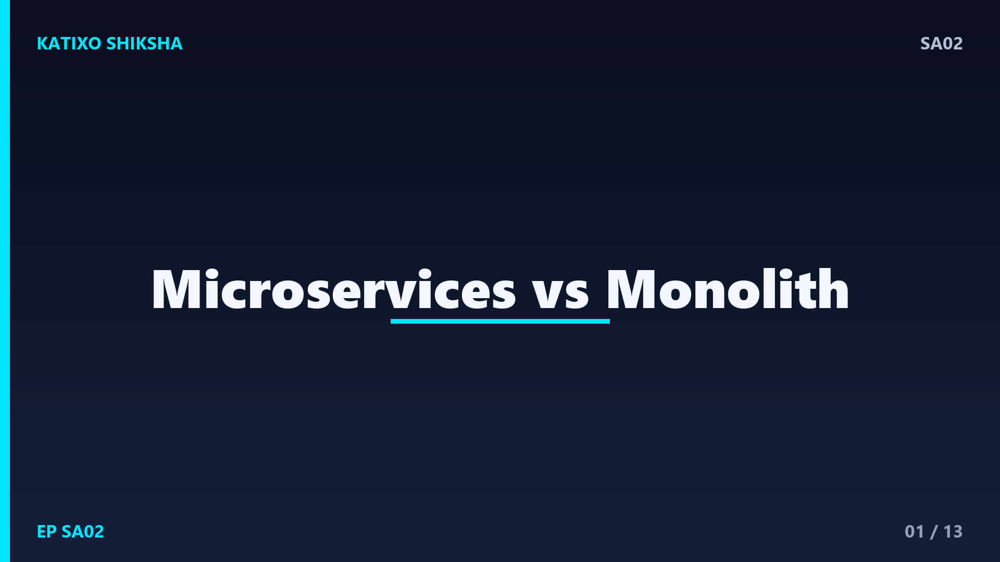
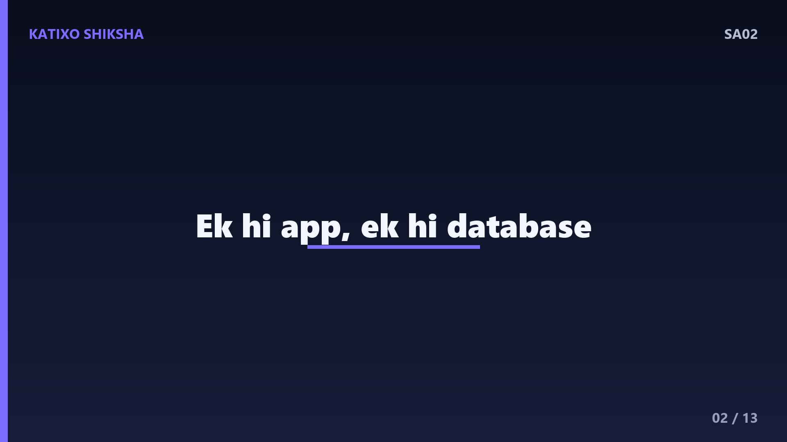
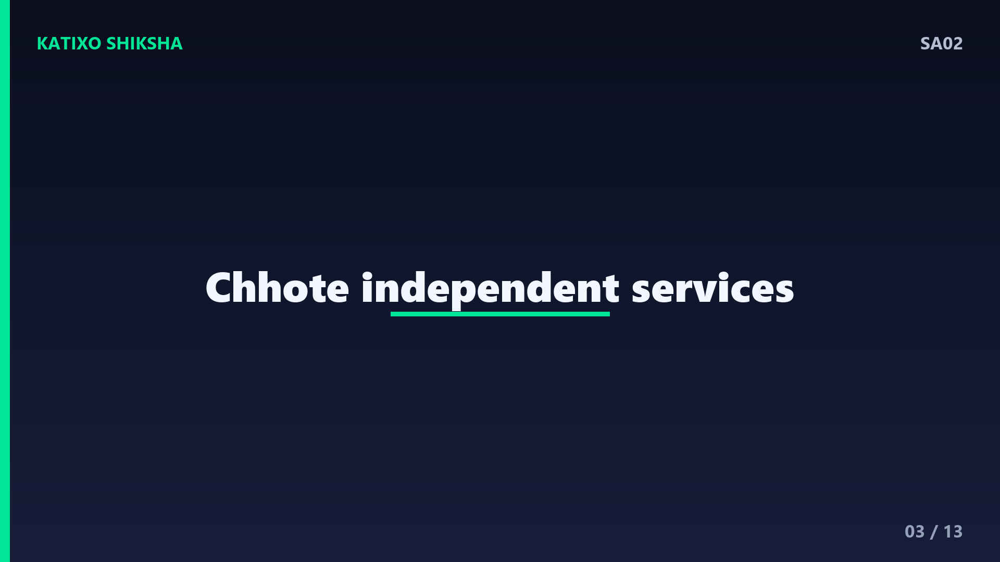
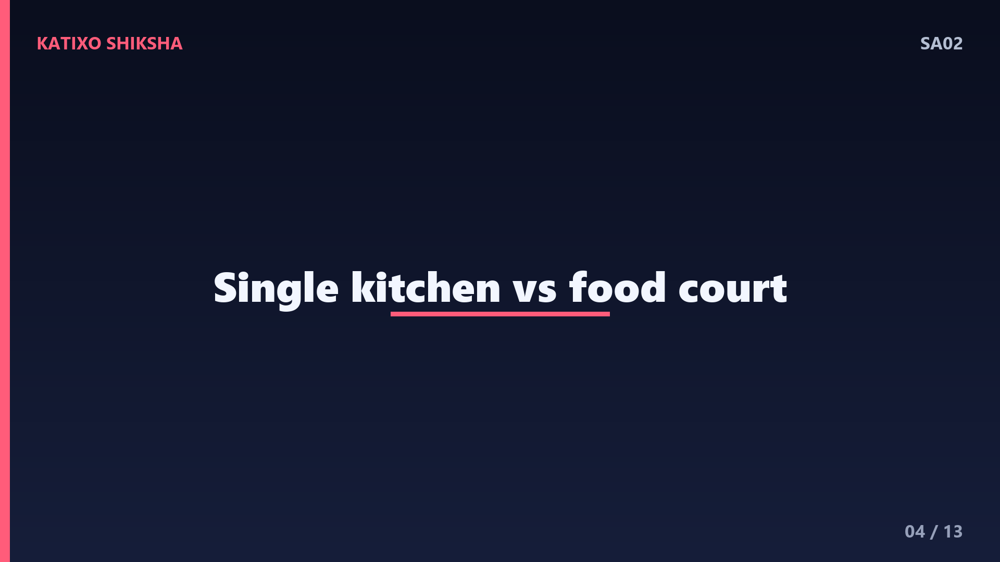
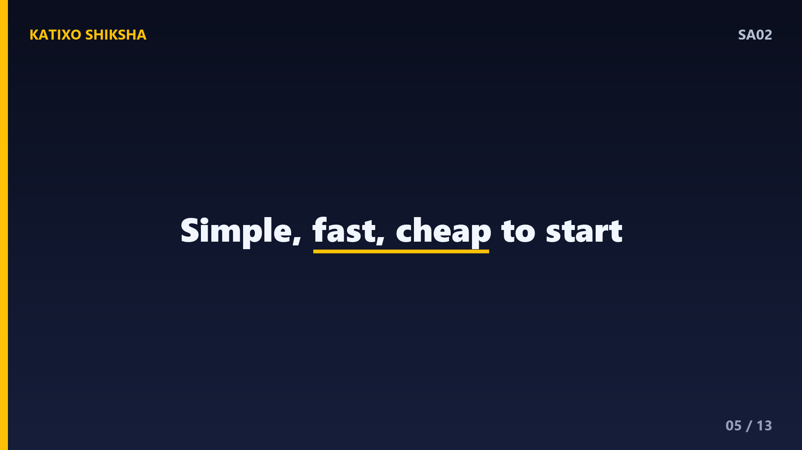
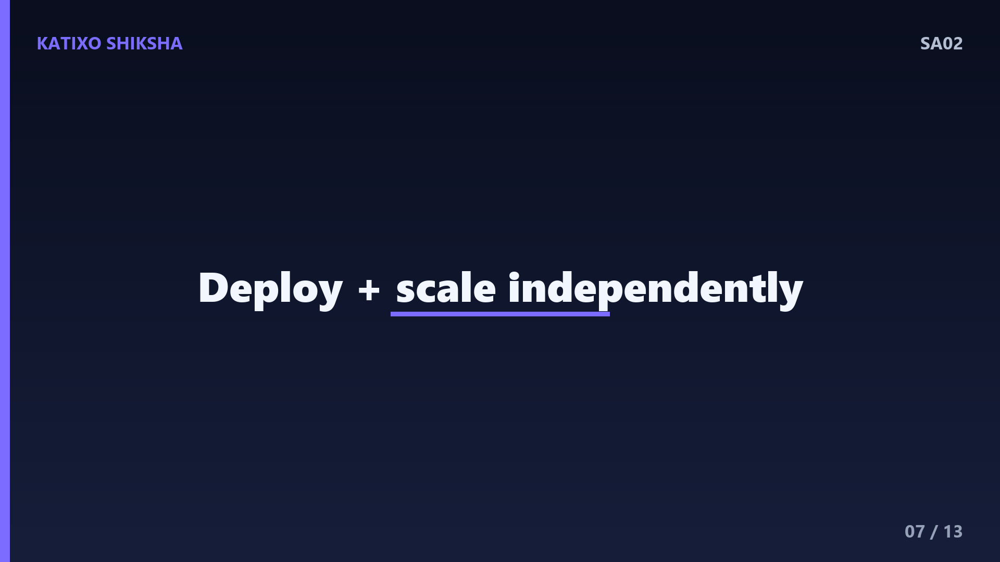
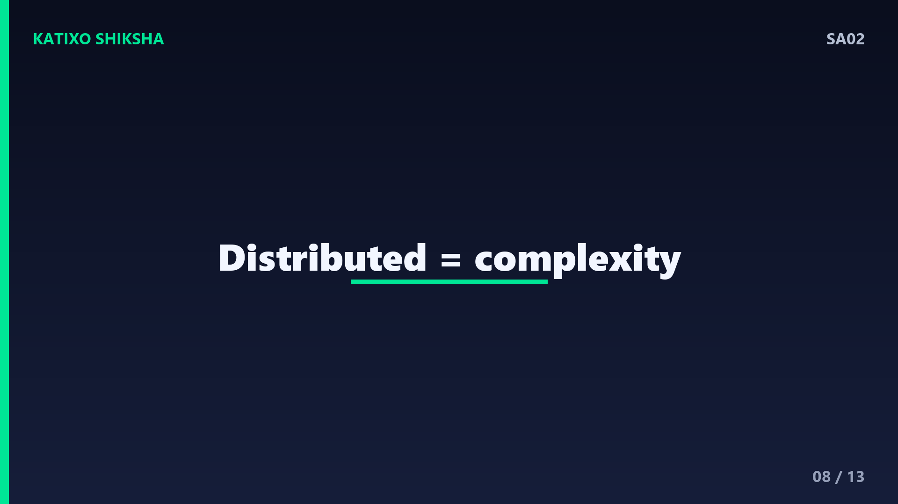
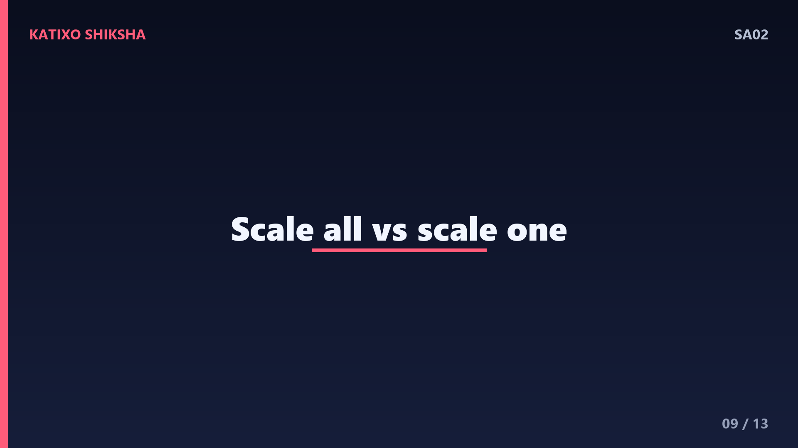

SA02 — Microservices vs Monolith — Kaunsa Better Hai?

Slide 1दोस्तों, हर system design interview में एक सवाल पक्का आता है — Microservices क्या हैं, और Monolith से बेहतर कब हैं? बहुत से developers buzzword की तरह microservices बोल देते हैं पर असली trade-offs नहीं समझते। आज Katixo KhojLab की इस episode में हम साफ़ Hinglish में समझेंगे — Monolith होता क्या है, Microservices क्या हैं, ये कैसे काम करते हैं, और सबसे ज़रूरी — कब कौन सा चुनना चाहिए। Interview में चमकने के लिए ये पूरी video देखिए। चलिए शुरू करते हैं।

Slide 2सबसे पहले समझते हैं Monolith. Monolith मतलब एक ही बड़ा application जिसमें सारा code एक साथ रहता है — login, payment, orders, notifications, सब कुछ एक ही codebase में, एक ही process में चलता है, और एक ही database use करता है। इसे build करके एक single unit की तरह deploy किया जाता है। शुरुआत में ये सबसे simple तरीका है, क्योंकि सब कुछ एक जगह है, समझना और चलाना आसान है। ज़्यादातर startups यहीं से शुरू करते हैं, और ये बिल्कुल सही approach है।

Slide 3अब आते हैं Microservices पर। यहाँ उसी बड़े application को छोटे-छोटे independent services में तोड़ दिया जाता है। हर service एक ही business काम संभालती है — एक auth service, एक payment service, एक order service. हर service का अपना code, अक्सर अपना database, और अपनी अलग deployment होती है। ये services आपस में network पर बात करती हैं, आमतौर पर REST API या messaging के ज़रिए। मतलब एक बड़े building की जगह कई छोटे, अलग-अलग घर।

Slide 4इसे एक analogy से पकड़ते हैं। Monolith एक बड़ा एकल restaurant है जहाँ एक ही kitchen सब कुछ बनाती है — Chinese, Indian, dessert. अगर kitchen में आग लग गई, तो पूरा restaurant बंद. Microservices एक food court की तरह हैं — हर stall अलग, अपनी kitchen, अपना staff. एक stall बंद हो तो बाकी चलते रहते हैं, और किसी एक stall पर भीड़ बढ़े तो सिर्फ़ उसी को बड़ा करो। यही independence microservices की असली ताकत है।

Slide 5अब Monolith के फायदे साफ़ करते हैं, क्योंकि लोग इसे underestimate करते हैं। पहला — development simple है, एक ही codebase में सब मिलता है। दूसरा — testing आसान, सब कुछ locally चला सकते हो। तीसरा — performance अच्छी, क्योंकि functions सीधे एक-दूसरे को call करते हैं, network का overhead नहीं। चौथा — deployment एक ही step. छोटी team और early-stage product के लिए monolith तेज़ और सस्ता है। याद रखिए — monolith कोई गाली नहीं, ये एक valid और अक्सर सही choice है।
Slide 6अब Monolith की दिक्कतें, जो product बड़ा होने पर सामने आती हैं। codebase इतना बड़ा हो जाता है कि नए developer को समझने में महीने लग जाते हैं। एक छोटा सा change करने पर भी पूरी application दोबारा deploy करनी पड़ती है। एक module में bug आए तो पूरा app down हो सकता है। और scaling — आप पूरे app को scale करते हो, भले सिर्फ़ एक हिस्से पर load हो, जो resources की बर्बादी है। इसी point पर teams microservices के बारे में सोचना शुरू करती हैं।

Slide 7अब Microservices के फायदे। पहला — independent deployment, एक service बदलो और सिर्फ़ उसे deploy करो, बाकी untouched. दूसरा — independent scaling, सिर्फ़ busy service को ज़्यादा resources दो, जैसे sale के time payment service. तीसरा — fault isolation, एक service गिरे तो पूरा system नहीं गिरता. चौथा — technology freedom, हर team अपनी service के लिए अलग language या database चुन सकती है. और बड़ी teams parallel में अलग-अलग services पर बिना टकराए काम कर सकती हैं।

Slide 8पर रुकिए — Microservices मुफ़्त में नहीं आते, इनकी एक बड़ी कीमत है। अब आपके पास एक distributed system है, और network fail हो सकता है, calls slow हो सकती हैं। Debugging मुश्किल हो जाती है क्योंकि एक request कई services से गुज़रती है — इसीलिए distributed tracing और centralized logging ज़रूरी हो जाते हैं। Data भी अलग-अलग databases में बँट जाता है, जिससे transactions और consistency संभालना कठिन हो जाता है। और infrastructure — Docker, Kubernetes, monitoring — सब चाहिए। ये operational complexity असली trade-off है।

Slide 9अब एक concrete example से दोनों की तुलना करते हैं। मान लो एक e-commerce app है। Monolith में जब Diwali sale पर traffic बढ़ता है, तो पूरी app को बड़े servers पर scale करना पड़ता है, चाहे load सिर्फ़ checkout पर हो। Microservices में आप सिर्फ़ cart और payment service को scale करते हो, बाकी services normal रहती हैं — सस्ता और smart. पर उसी समय आपको ये भी संभालना पड़ता है कि अगर payment service inventory service को call करे और वो धीमी हो, तो क्या होगा।
Slide 10अब interview का सबसे important हिस्सा — कौन सा कब चुनें? Monolith चुनिए जब team छोटी हो, product नया हो, requirements अभी बदल रहे हों, और आपको तेज़ी से launch करना हो. Microservices चुनिए जब system बहुत बड़ा हो गया हो, कई बड़ी teams independently काम कर रही हों, और अलग-अलग हिस्सों की scaling की ज़रूरत अलग हो. एक golden rule याद रखिए — ज़्यादातर successful systems monolith से शुरू होकर बाद में ज़रूरत पड़ने पर microservices में टूटते हैं।
Slide 11यहाँ एक modern middle-ground भी जान लीजिए, interview में ये बोलोगे तो impression पड़ेगा — Modular Monolith. इसमें code एक ही deployment में रहता है, पर अंदर साफ़ modules में बँटा होता है, मानो microservices की तैयारी. इससे शुरू में simplicity मिलती है, और बाद में किसी module को निकालकर अलग service बनाना आसान हो जाता है. यानी आपको दोनों दुनिया का फायदा मिलता है — पहले monolith की speed, फिर ज़रूरत पड़ने पर smooth migration.
Slide 12तो चलिए एक quick recap कर लेते हैं, तीन points में। पहला — Monolith एक single unified application है, जो simple, तेज़ और छोटी teams व नए products के लिए perfect है। दूसरा — Microservices छोटे independent services हैं जो independent deployment, scaling और fault isolation देते हैं, पर साथ में distributed system की complexity लाते हैं। तीसरा — कोई एक हमेशा बेहतर नहीं, सही choice आपकी team size, scale और maturity पर निर्भर करती है। Interview में हमेशा trade-offs बोलिए, absolute answer नहीं।
Slide 13तो दोस्तों, आज आपने सीखा कि Microservices vs Monolith कोई हाँ-या-ना वाला सवाल नहीं, बल्कि एक trade-off वाला decision है। असली समझदारी इसमें है कि आप अपनी situation के हिसाब से सही चुनाव कर सको, और interviewer को अपनी सोच का logic दिखा सको। एक बार खुद एक छोटा monolith बनाकर सोचिए कि आप उसे services में कैसे तोड़ोगे — ये exercise बहुत कुछ सिखा देगी। Aisi aur system design videos ke liye Katixo KhojLab subscribe karein! मिलते हैं अगली episode में।